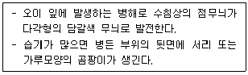
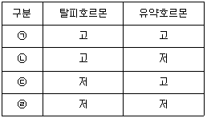
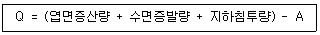

식물보호기사 (2021-09-12 기출문제)
1과목: 식물병리학
1. 십자화과 작물에 발생하는 배추 무사마귀병에 대한 설명으로 옳지 않은 것은?
- 알칼리성 토양에서 발병이 잘 된다.
- 배수가 불량한 토양에서 발생이 많다.
- 순활물기생균으로 인공배양이 되지 않는다.
- 유주자가 뿌리털 속을 침입하여 변형체가 된다.
(정답률: 75%)

2. 벼 도열병에 대한 설명으로 옳지 않은 것은?
- 종자 소독으로는 방제효과가 매우 적다.
- 담녹갈색의 짧은 다이아몬드형 병무늬를 형성한다.
- 잎, 잎자루, 잎혀, 마디, 이삭목, 이삭가지, 볍씨 등에 발생한다.
- 볍씨의 발아 직후부터 발생하여 출수 후 성숙기까지 계속 발생한다.
(정답률: 85%)
3. 다음 설명에 해당하는 병은?

- 오이 노균병
- 오이 흰가루병
- 오이 덩굴마름병
- 오이 잿빛곰팡이병
(정답률: 71%)
4. 파이토플라스마에 대한 설명으로 옳지 않은 것은?
- 세포벽이 없다.
- 인공배지에서 생장하지 않는다.
- 매개충에 의하여 전파되지 않는다.
- 테트라싸이클린에 대하여 감수성이다.
(정답률: 85%)
5. 병원균이 기주교대를 하는 이종기생균은?
- 배나무 불마름병
- 사과나무 흰가루병
- 배나무 붉은별무늬병
- 사과나무 검은별무늬병
(정답률: 82%)
6. 다음 중 벼에서는 가장 잘 발생하지 않는 병은?
- 오갈병
- 녹병
- 도열병
- 잎집무늬마름병
(정답률: 86%)
7. 식물병을 일으키는 곰팡이 중에서 균사에 격막이 없는 병원균으로만 올바르게 나열된 것은?
- 난균, 자낭균
- 난균, 접합균
- 담자균, 자낭균
- 담자균, 접합균
(정답률: 70%)
8. 마름무늬매미충(모무늬매미충)에 의해 전반되지 않는 병은?
- 뽕나무 오갈병
- 벚나무 빗자루병
- 붉나무 빗자루병
- 대추나무 빗자루병
(정답률: 72%)
9. 붕소가 부족하여 사과나무에서 발생하는 병은?
- 탄저병
- 축과병
- 부란병
- 점무늬낙엽병
(정답률: 69%)
10. 벼 줄무늬잎마름병을 방제하는 방법으로 가장 효과가 작은 것은?
- 살균제 살포
- 애멸구 제거
- 저항성 품종 재배
- 논두렁 잡초 제거
(정답률: 66%)
11. 병원균이 담자기와 담자 포자를 형성하는 것은?
- 감자 역병
- 벼 깨씨무늬병
- 배추 무사마귀병
- 보리 겉깜부기병
(정답률: 69%)
12. 다음 중 곰팡이(fungi)의 특징이 아닌 것은?
- 포자를 갖는다.
- 균사를 갖는다.
- 핵을 갖는다.
- 엽록소를 갖는다.
(정답률: 87%)
13. 식물병원 세균 중 육즙한천배양기 상에서 황색 균총을 형성하는 것은?
- Pseudomonas
- Xanthomonas
- Agrobacterium
- Pectobacterium
(정답률: 69%)
14. 하우스 재배하는 채소에서 과습과 저온에 많이 발생하는 병은?
- 고추 탄저병
- 오이 덩굴쪼김병
- 토마토 풋마름병
- 딸기 잿빛곰팡이병
(정답률: 78%)
15. 다음 중 크기가 가장 작은 식물 병원체는?
- 진균
- 세균
- 바이러스
- 바이로이드
(정답률: 87%)
16. 병원균이 불완전세대로 Pyicularia grisea(P. oryzae)인 식물병은?
- 벼 도열병
- 벼 흰잎마름병
- 맥류 줄기녹병
- 맥류 흰가루병
(정답률: 73%)
17. 1차 전염원에 대한 설명으로 가장 옳은 것은?
- 가벼운 증상을 일으키는 전염원
- 병반으로부터 가장 먼저 분리되는 전염원
- 월동한 병원체로부터 새로운 생육기에 들어 가장 먼저 만들어진 전염원
- 작물 재배를 시작한 첫 해에 나오는 전염원
(정답률: 76%)
18. 오이류 덩굴쪼김병의 방제법으로 가장 효과가 낮은 것은?
- 종자를 소독한다.
- 저항성 품종을 재배한다.
- 잎 표면에 약제를 집중적으로 살포한다.
- 호박이나 박을 대목으로 접목하여 재배한다.
(정답률: 79%)
19. 벼 키다리병의 병징 형성 원인으로 병원균이 분비하는 주요 호르몬은?
- 옥신
- 에틸렌
- 지베렐린
- 사이토키닌
(정답률: 82%)
20. 다음 중 감자 Y 바이러스의 주요 매개층은?
- 복숭아혹진딧물
- 번개매미충
- 끝동매미충
- 응애
(정답률: 65%)
2과목: 농림해충학
21. 누에의 성장단계에서 어미가 생성하는 휴면호르몬이 직접적으로 관여하는 휴면단계는?
- 알 휴면
- 유충 휴면
- 성충 휴면
- 번데기 휴면
(정답률: 69%)
22. 앞날개가 경화되어 있는 곤충은?
- 벼메뚜기
- 검정송장벌레
- 땅강아지
- 썩덩나무노린재
(정답률: 50%)
23. 윤작과 혼작을 통하여 방제효과를 효과적으로 볼 수 있는 해충의 특성은?
- 기주범위가 넓고 이동성이 높은 해충
- 기주범위가 넓고 이동성이 낮은 해충
- 기주범위가 좁고 이동성이 낮은 해충
- 기주범위가 좁고 이동성이 높은 해충
(정답률: 73%)
24. 곤충의 유충 발육 단계에서 다음 령기의 유충으로 탈피하는 경우는?

- ㉠
- ㉡
- ㉢
- ㉣
(정답률: 60%)
25. 내충성의 범주에 포함되지 않는 것은?
- 감수성
- 항객성
- 항생성
- 내성
(정답률: 57%)
26. 살충제 처리 후 무처리구의 생충율이 90% 이고, 처리구의 생충율이 22.5% 일 경우 처리구의 보정 사충율은?
- 75%
- 70%
- 65%
- 60%
(정답률: 52%)
27. 해충방제에 사용되는 천적의 특성에 대한 설명으로 가장 거리가 먼 것은?
- 포식범위가 넓은 것
- 분산력이 강한 것
- 포식성이 높은 것
- 번식력이 왕성한 것
(정답률: 58%)
28. 사과잎말이나방에 대한 설명으로 옳지 않은 것은?
- 1년에 1회 발생한다.
- 유충으로 월동한다.
- 유충의 머리는 녹색을 띤 황갈색이다.
- 유충의 흩눈은 3개이다.
(정답률: 49%)
29. 다음 해충 중 기주 범위가 가장 좁은 것은?
- 벼멸구
- 흰등멸구
- 애멸구
- 끝동매미충
(정답률: 62%)
30. 다음 중 토양해충인 것은?
- 송장벌레
- 바퀴
- 땅노린재
- 땅강아지
(정답률: 72%)
31. 자연생태계와 비교할 때 농생태계의 특징은?
- 영양단계의 상호관계가 간단하다.
- 영양물질 순환이 폐쇄적이다.
- 종의 다양성이 높다.
- 유전자 다양성이 높다.
(정답률: 62%)
32. 곤충의 성비(sex ratio)의 공식으로 옳은 것은?
- 수컷의 수 / 암컷의 수
- 암컷의 수 / 수컷의 수
- 암컷의 수 / (암컷의 수 + 수컷의 수)
- 수컷의 수 / (암컷의 수 + 수컷의 수)
(정답률: 73%)
33. 페로몬의 역할이 아닌 것은?
- 상대 성의 개체를 유인한다.
- 음식의 위치를 알려준다.
- 다른 곤충간의 통신으로 냄새나 독성을 이용하여 자신을 보호한다.
- 사회생활을 하거나 집단을 이루는 곤충류에서 천적의 침입 등 위험을 알려준다.
(정답률: 70%)
34. 곤충의 혈림프를 구성하는 혈구의 기능이 아닌 것은?
- 수분보존
- 식균작용
- 피낭형성
- 응고작용
(정답률: 57%)
35. 특정 지역의 해충 밀도를 추정하고자 할 때 비교적 많은 표본수가 요구되는 해당 해충의 분포양식은?
- 포아송분포
- 균일분포
- 임의분포
- 집중분포
(정답률: 61%)
36. 우리나라에서 발생하는 해충 중 외래종이 아닌 것은?
- 섬서구메뚜기
- 꽃매미
- 갈색날개매미충
- 열대거세미나방
(정답률: 67%)
37. 살충제가 곤충의 체내로 침투하는 주요 경로가 아닌 것은?
- 경구
- 경피
- 기문
- 돌기
(정답률: 76%)
38. 종합적해충방제에서 방제를 실시해야 되는 해충의 밀도수준은?
- 경제적 소득수준
- 경제적 피해허용수준
- 물리적 피해수준
- 해충 밀도수준
(정답률: 80%)
39. 수입식물 검역과정에서 금지병해충이 발견되었을 경우 취하는 조치로 맞는 것은?
- 소독
- 폐기 또는 반송조치
- 시료분석
- 전문가 회의
(정답률: 83%)
40. 복숭아심식나방의 발생예찰에 이용되는 페로몬은?
- 성페로몬
- 분산페로몬
- 길잡이페로몬
- 경보페로몬
(정답률: 75%)
3과목: 재배학원론
41. 다음 중 작물 생육 필수원소에서 다량으로 소요되는 원소가 아닌 것은?
- 칼슘
- 칼륨
- 질소
- 니켈
(정답률: 82%)
42. 토양 구조에 대한 설명으로 옳지 않은 것은?
- 단립(單粒)구조는 토양통기와 투수성이 불량하다.
- 입단(粒團)구조는 유기물과 석회가 많은 표층토에서 많이 보인다.
- 이상(泥狀)구조는 과습한 식질토양에서 많이 보인다.
- 단립(單粒)구조는 대공극이 많고 소공극이 적다.
(정답률: 60%)
43. 다음 중 질소질 비료가 아닌 것은?
- 요소
- 유안
- 질산암모늄
- 용성인비
(정답률: 68%)
44. 식물의 진화와 관련하여 작물의 특징에 대한 설명으로 옳지 않은 것은?
- 발아억제물질이 감소하거나 소실되는 방향으로 발달되었다.
- 분얼이나 분지가 일정 기간 내에 일시에 발생하는 방향으로 발달하였다.
- 개화기는 일시에 집중하는 방향으로 발달하였다.
- 탈립성이 큰 방향으로 발달하였다.
(정답률: 65%)
45. 다음 논의 용수량(Q) 계산식에서 A에 해당하는 것은?

- 강수량
- 강우량
- 유효우량
- 흡수량
(정답률: 66%)
46. 신품종이 기본적으로 구비해야 하는 특성으로 옳지 않은 것은?
- 균일성
- 변이성
- 구별성
- 안정성
(정답률: 82%)
47. 강산성 토양에서 가급도가 감소하여 작물생육에 부족하기 쉬운 원소가 아닌 것은?
- 마그네슘
- 칼슘
- 망간
- 인
(정답률: 49%)
48. 벼 생육기간 중 냉해에 가장 약한 시기는?
- 감수분열기
- 등숙기
- 분얼기
- 유묘기
(정답률: 69%)
49. 다음 중 연작의 피해가 가장 작은 작물로만 나열된 것은?
- 고추, 강낭콩, 수박
- 고구마, 완두, 토마토
- 수수, 감자, 가지
- 벼, 담배, 옥수수
(정답률: 68%)
50. 순3포식 농법에 대한 설명으로 옳은 것은?
- 포장을 3등분하여 경지의 2/3는 춘파곡물이나 추파곡물을 재식하고 나머지 1/3은 휴한하는 방법이다.
- 포장을 3등분하여 2/3는 곡물을 재배하고 나머지 지역에는 콩과 녹비작물을 재배하는 방법이다.
- 식량과 가축의 사료를 생산하면서 지력을 유지하고 중경효과까지 얻기 위하여 적합한 작물을 조합하는 방법이다.
- 미국의 옥수수지대에서 실시하는 윤작방식으로 옥수수, 콩, 귀리, 클로버를 조합하여 경작하는 방법이다.
(정답률: 66%)
51. 다음 중 과수의 핵과류에 해당하지 않는 것은?
- 복숭아
- 자두
- 사과
- 살구
(정답률: 81%)
52. 발아 최저온도가 가장 낮은 작물은?
- 콩
- 옥수수
- 귀리
- 호박
(정답률: 57%)
53. 토양이나 수질 오염을 통하여 인체에 중금속 중독을 초래하며 이타이이타이병이 나타나는 것은?
- 카드뮴
- 규소
- 망간
- 몰리브덴
(정답률: 79%)
54. 다음 중 작물이 주로 이용하는 토양수분은?
- 모관수
- 결합수
- 중력수
- 흡착수
(정답률: 76%)
55. 서로 도움이 되는 특성을 지닌 두 가지 작물을 같이 재배할 경우 이 두 작물을 일컫는 가장 적절한 용어는?
- 대파작물
- 앞작물
- 동반작물
- 구황작물
(정답률: 80%)
56. 다음 중 벼의 수해를 크게 하는 조건으로 가장 알맞은 것은?
- 저수온, 청수, 유수
- 저수온, 탁수, 정체수
- 고수온, 청수, 유수
- 고수온, 탁수, 정체수
(정답률: 63%)
57. 다음 중 요수량이 가장 적은 작물은?
- 호박
- 알팔파
- 옥수수
- 완두
(정답률: 67%)
58. 침관수 피해에 대한 대책으로 옳지 않은 것은?
- 퇴수 후 새로운 물을 갈아 댄다.
- 김을 매어 지중통기를 좋게 한다.
- 침수 후에는 병충해의 발생이 줄어들기 때문에 방제가 필요없다.
- 피해가 심할 때에는 추파, 보식 등을 한다.
(정답률: 84%)
59. 다음 중 작물재배 시 부족하면 수정·결실이 나빠지는 미량원소는?
- Mg
- B
- S
- Ca
(정답률: 71%)
60. 다음 중 C4 작물은?
- 벼
- 옥수수
- 밀
- 보리
(정답률: 71%)
4과목: 농약학
61. 약효지속시간이 길어야 하는 보호살균제의 특성을 고려하였을 때, 보호살균제 살포액의 가장 중요한 물리적 특성은?
- 습윤성과 확전성
- 부착성과 고착성
- 현수성과 유화성
- 침투성과 입자의 크기
(정답률: 73%)
62. 수화제(Wettable Powder; WP)에 주로 사용되는 증량제는?
- toluene
- sulfamate
- bentonite
- methanol
(정답률: 65%)
63. 농약의 독성과 관련된 설명 중 옳지 않은 것은?
- 농약은 유해한 생물에만 유효하고 그 밖의 생물에는 무독해야 한다.
- 병, 해충의 내성으로 인한 약효 저하로 고독성농약 등록이 늘어가고 있다.
- 독성이 약한 농약도 체내에 다량섭취되면 독작용을 나타낸다.
- 농약의 독성강도에 따라 적절한 주의를 기울여 피해를 최소화 한다.
(정답률: 74%)
64. 비교적 지효성이고 화학적인 안정성이 크며 약효기간이 긴 특성을 가지고 있는 유기인계 살충제는?
- Phosphate형
- Thiphosphate형
- Dithiophosphate형
- Phosphonate형
(정답률: 60%)
65. 농약의 약효를 최대로 발현시키기 위한 방법으로 가장 거리가 먼 것은?
- 방제적기에 농약 살포
- 적정농도의 정량살포
- 병해충 및 잡초에 알맞은 농약의 선택
- 효과가 좋은 농약 한가지만을 계속 사용
(정답률: 84%)
66. 농약에서 계면활성제의 작용으로 거리가 먼 것은?
- 습윤 작용(wetting property)
- 응집 작용(coagulationg property)
- 침투 작용(penetrating property)
- 고착 작용(adhesive property)
(정답률: 54%)
67. 살충제를 작용기작에 따라 분류하였을 때 가장 거리가 먼 것은?
- 성장저해제
- 신경전달저해제
- 호흡저해제
- 광합성저해제
(정답률: 65%)
68. 농용항생제가 아닌 것은?
- Chloropicrin
- Blasticidin-S
- Kasugamycin
- Streptomycin
(정답률: 51%)
69. 항생제 계통의 살균제인 streptomycin에 대한 설명으로 옳은 것은?
- 주로 벼의 도열병 방제용으로 살포된다.
- 저독성 약제로 세균성병 방제에 사용된다.
- 살균기작은 SH효소에 의한 핵산합성 저해이다.
- 수화제로 사용할 경우 주로 streptomycin80%, 기타 증량제 20%로 희석하여 사용한다.
(정답률: 40%)
70. 농약 독성의 발현속도(시기)에 따른 구분은?
- 고독성
- 급성독성
- 잔류독성
- 경구독성
(정답률: 73%)
71. 농약의 분자구조 중 H2N-CO-NH2 골격을 가진 농약 계열은?
- 트리아진(Triazine)계
- 아마이드(Amide)계
- 다이아진(Diazine)계
- 우레아(Urea)계
(정답률: 46%)
72. 농약관리법령상 농약과 농약의 포장지에 포함되어야 할 표시사항이 바르게 연결되지 않은 것은?
- 대기오염성 농약 – 경고표시와 안내문자
- 사람 및 가축에 위해한 농약 - 해독방법
- 살충제 – 사용방법과 사용에 적합한 시기
- 토양잔류성 농약 – 저장·보관 및 사용상의 주의사항
(정답률: 55%)
73. 유기인제에 중독되었을 때 주로 사용되는 해독제는?
- Balbitar
- PAM
- Meticarbanol
- Rhenitonine
(정답률: 69%)
74. 해충의 신체 골격을 이루는 키틴(chitin)의 생합성을 저해하는 살충제의 작용기작은?
- 신경 및 근육에서의 자극전달작용 저해
- 성장 및 발생과정 저해
- 호흡과정 저해
- 중장 파괴
(정답률: 61%)
75. 60kg 농작물에 50% 유제를 사용하여 원제의 농도가 8mg/kg작물이 되도록 처리하려고 할 때 소요 약량(mL)은? (단, 약제의 비중은 1.07 이다.)
- 0.5
- 0.7
- 0.9
- 1.2
(정답률: 48%)
76. 45% EPN 유제 200mL를 0.3%로 희석하는데 소요되는 물의 양(mL)은? (단, 유제의 비중은1.0 이다.)
- 29800
- 28700
- 27600
- 26500
(정답률: 65%)
77. 농약의 품질불량의 원인이 되어 약해를 일으키는 경우가 가장 거리가 먼 것은?
- 유해성분의 생성에 의한 약해
- 불순물의 혼합에 의한 약해
- 원제 부성분에 의한 약해
- 고농도에 의한 약해
(정답률: 62%)
78. 농약의 일일섭취허용량(ADI) 설정식으로 옳은 것은? (단, NOAEL은 No Observable Adverse Effect Level, MRL은 Maximum Residue Limit의 약어이다.)
- NOAEL ÷ 식품계수
- NOAEL ÷ 체중
- NOAEL ÷ 안전계수
- NOAEL ÷ MRL
(정답률: 70%)
79. 유기인제 살충제의 특성에 대한 설명으로 옳은 것은?
- 대부분 안정한 화합물이다.
- 알칼리에 대하여 분해되기 쉽다.
- 동·식물체 내에서의 분해가 느리다.
- 직사광선에 의하여 분해되지 않는다.
(정답률: 65%)
80. 수면시용법(水面施用法)으로 살포하는 약제가 갖추어야 할 특성으로 틀린 것은?
- 물에 잘 풀리고 널리 확산되어야 한다.
- 물이나 미생물 또는 토양성분 등에 의하여 분해되지 않아야 한다.
- 수중에서 장시간에 걸쳐 녹아 약액의 농도를 유지하여야 한다.
- 가급적 약제의 일부는 수중에 현수되도록 친수 및 발수성을 갖추어야 한다.
(정답률: 62%)
5과목: 잡초방제학
81. 주로 논이나 습지에 발생하는 화본과 다년생 잡초는?
- 향부자
- 망초
- 씀바귀
- 나도겨풀
(정답률: 67%)
82. 다음 중 잡초종합방제체계 수립을 위한 선형특성적 모형에서 시작부터 완성단계로의 순서가 올바르게 나열된 것은?
- 모형의 평가 및 수정 → 문제유형의 검토 → 잡초군락의 예찰 → 제초방법의 선정 → 방제체계의 적용
- 문제유형의 검토 → 잡초군락의 예찰 → 제초방법의 선정 → 방제체계의 적용 → 모형의 평가 및 수정
- 제초방법의 선정 → 잡초군락의 예찰 → 방제체계의 적용 → 문제유형의 검토 → 모형의 평가 및 수정
- 잡초군락의 예찰 → 문제유형의 검토 → 방제체계의 적용 → 모형의 평가 및 수정 → 제초방법의 선정
(정답률: 68%)
83. 제초제의 살초형태와 가장 거리가 먼 것은?
- 숙기억제
- 황화
- 고사
- 괴사
(정답률: 62%)
84. 잡초를 형태학적으로 분류할 때 관계없는 것은?
- 광엽 잡초
- 로제트형 잡초
- 화본과 잡초
- 방동사니과 잡초
(정답률: 69%)
85. 수용성이 아닌 원제를 아주 작은 입자로 미분화시킨 분말로 물에 분산시켜 사용하는 제초제의 제형은?
- 유제
- 보조제
- 수용제
- 수화제
(정답률: 67%)
86. 광합성을 억제하는 계통의 제초제가 아닌 것은?
- Triazine계
- Urea계
- Acetamide계
- Bipyridylium계
(정답률: 40%)
87. 다음 중 일년생 잡초로만 나열된 것은?
- 여뀌, 물달개비
- 벗풀, 띠
- 보풀, 민들레
- 올방개, 토끼풀
(정답률: 62%)
88. 제초제의 선택성에 영향을 미치는 요인 중 물리적 요인으로 가장 거리가 먼 것은?
- 처리 방법
- 제형
- 처리 약량
- 광도
(정답률: 67%)
89. 다음 중 광엽 잡초로만 나열한 것은?
- 여뀌, 명아주
- 매자기, 쇠털골
- 돌피, 띠
- 향부자, 바랭이
(정답률: 56%)
90. 다음 중 잡초의 유용성으로 가장 거리가 먼 것은?
- 병해충의 서식처가 된다.
- 토양에 유기물을 공급해 준다.
- 토양 유실을 방지해 준다.
- 작물개량을 위한 유전자 자원으로 활용될 수 있다.
(정답률: 72%)
91. 잡초종자의 발아 습성으로 옳지 않은 것은?
- 발아의 준동시성
- 발아의 계절성
- 발아의 불연속성
- 발아의 주기성
(정답률: 55%)
92. 식물영양소 중 작물과 잡초에 가장 많이 요구되는 영양소들로만 나열된 것은?
- 염소, 철, 게르마늄
- 철, 몰리브덴, 셀렌
- 칼륨, 질소, 인산
- 코발트, 나트륨, 붕소
(정답률: 81%)
93. 다음 중 주로 괴경으로 번식하는 논잡초는?
- 올방개
- 깨풀
- 속속이풀
- 꽃다지
(정답률: 74%)
94. 잡초에 대한 작물의 경합력을 높이는 방법으로 가장 적절한 것은?
- 무비재배를 한다.
- 직파재배를 한다.
- 이앙·이식재배를 한다.
- 무경운재배를 한다.
(정답률: 74%)
95. 다음 중 잡초경합 한계기간이 가장 긴 작물은?
- 녹두
- 양파
- 밭벼
- 콩
(정답률: 63%)
96. 작물과 잡초간의 경합에 관여하는 주요한 요인으로 가장 거리가 먼 것은?
- 수분
- 광
- 영양분
- 제초제 내성
(정답률: 69%)
97. 다음 중 선택성 제초제는?
- 2,4-D
- Paraquat
- Glufosinate
- Glyphosate
(정답률: 73%)
98. 다음 중 암발아 잡초 종자에 해당하는 것은?
- 쇠비름
- 바랭이
- 광대나물
- 소리쟁이
(정답률: 65%)
99. 잡초의 번식에 대한 설명으로 옳지 않은 것은?
- 영양번식은 포복경, 지하경, 인경, 구경 등을 통해 이루어지는 것을 말한다.
- 돌피, 바랭이, 냉이는 유성번식을 한다.
- 다년생 잡초는 영양번식과 유성번식을 겸한다.
- 일년생 잡초는 자가수정에 의해서만 번식한다.
(정답률: 68%)
100. 다음 중 외래잡초로만 나열된 것은?
- 돼지풀, 올미
- 너도방동사니, 흰명아주
- 개망초, 어저귀
- 올방개, 광대나물
(정답률: 46%)